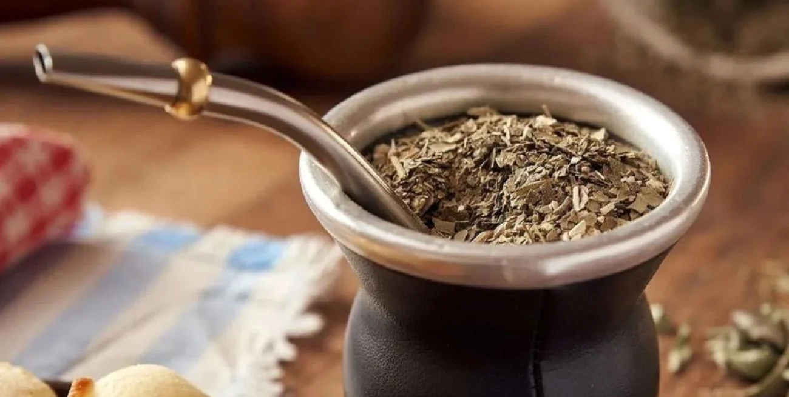

Receta para preparar un buen mate
Descripcion
El mate es una infusión hecha a base de las hojas secas de la planta Ilex paraguariensis, originaria de Sudamérica. Consumido principalmente en Argentina, Paraguay, Uruguay y el sur de Brasil, el mate es conocido por su capacidad para aumentar la energía y la concentración, gracias a sus propiedades naturales.
Ingredientes
- Yerba mate
- Agua caliente
Pasos
- Llenar el mate hasta 3/4 con yerba.
- Inclinar el mate y formar un hueco.
- Colocar la bombilla en el hueco.
- Agregar agua caliente sin hervir y cebar.